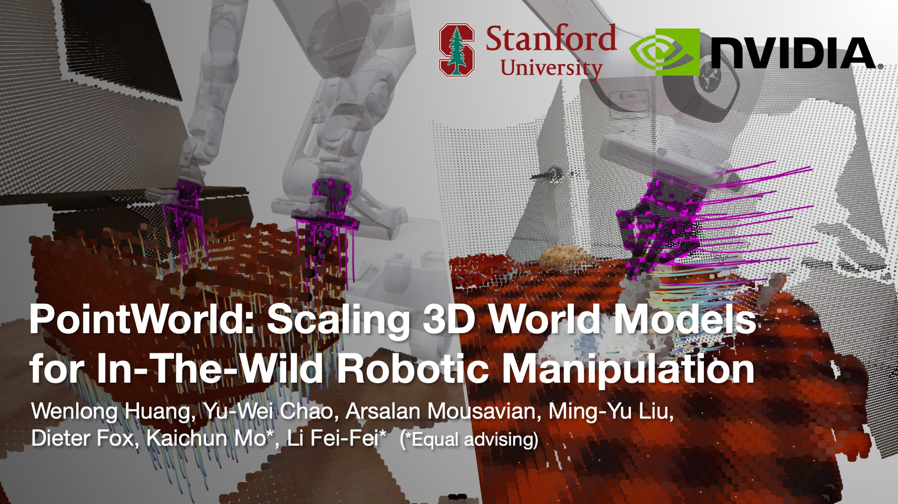

PointWorld · 2026.10.26
动作也是一团点：PointWorld 在一张 W7900 上预言下一秒

看一眼桌上那条围巾，再想一下手要怎么捏住它的一角，你大概已经知道它会怎么垂下来、哪一段会先离开桌面。人做这种预判几乎不费力，机器人却得专门学。PointWorld 想教会机器人的就是这件事：给它一两张 RGB-D 照片和一段打算执行的动作，让它说出接下来一秒，场景里每一个点会往哪里走。
这项工作来自 Stanford 和 NVIDIA，作者是 Wenlong Huang、Yu-Wei Chao、Arsalan Mousavian、Ming-Yu Liu、Dieter Fox、Kaichun Mo 和 Li Fei-Fei，代码、数据和检查点都已公开。它最值得讲的不是某个网络结构，而是一个关于表示的赌注。
世界模型的三条老路
让机器人"先想后做"的模型叫世界模型：输入当前状态和动作，输出下一刻的状态。过去大致有三条路。
第一条是物理仿真。只要把场景建得足够细，MuJoCo 这类引擎可以算得很准，可每个新场景都要有人去建模，几何、质量、摩擦一样都少不了，仿真和真实之间还隔着一道缝。第二条是学出来的动力学，比如粒子或图网络。它们从观测里学交互，但常常要假设场景完全可见、物体已经分割好、材质已知。第三条是视频生成。大模型画得很逼真，可对动作的响应往往含糊，物理也经不起细看，再加上扩散模型生成一段要好几秒，没法塞进需要反复试探动作的控制回路。
PointWorld 想补的，正是"人扫一眼就能想到"和"现有模型能算出来"之间的这段距离：要三维的、对动作敏感的、能在野外场景直接用，还要快。
赌注：状态和动作说同一种语言
PointWorld 把状态和动作放进同一种表示：三维点流。
状态是场景点云。用一到几台标定好的 RGB-D 相机拍一张，抠掉机器人自己，剩下的像素反投影成点，每个点带上颜色、法向这些特征。场景只看得到一部分，背面和被挡住的地方都缺着，这没关系。
动作不再是"第三个关节转 0.2 弧度"这样的数字，而是机器人自己的几何：从 URDF 描述文件里，在夹爪表面采样几百个点，用正运动学把它们推到未来每一个时刻，得到一串会动的机器人点。这样一来，"想象中的动作"永远是完全可见的。哪怕夹爪伸进了箱子背面，模型也知道它在哪里。
世界模型的任务就变成：给定当前的场景点和未来 10 步（每步 0.1 秒）的机器人点，一次前向算出每个场景点在这 10 步里的三维位移。
这个赌注的好处有三层。第一，它和机体无关。单臂的 Franka 和双臂人形机器人说的是同一种"点的语言"，只是点的形状不同，数据可以混在一起学。第二，它不在乎任务成败。只要机器人碰了东西、东西动了，就是一条有用的监督，作者把这比作"交互版的下一个词预测"。第三，监督是逐点的，而且很密。要把整个场景的位移预测对，模型得隐式地分出被推的是哪个物体、它是软的还是硬的、铰链在哪、背面大概是什么形状，还要算上重力。这些都没有单独的标签，全靠预测运动逼出来。
说白了，机器人不需要知道自己的关节角，只需要知道"我的手指下一秒会出现在哪里"。
不过，"动作也是点"不等于点越多越好。论文专门做了对比：只在夹爪上采几百个点，对比全身稀疏采样、全身 2000 个点、末端位姿加夹爪开合，以及关节角加夹爪开合。在 BEHAVIOR 上，几种点流表示都胜过低维的位姿和关节角，说明把接触放在空间里表达确实有用。在噪声更大的 DROID 上，全身点云反而不如低维表示，大量从不碰任何东西的点把本就稀疏的学习信号淹没了。只用夹爪上的点，在两个域上都是最好的。所以这个赌注更准确的说法是：动作是那些会碰到世界的点。
数据：把 DROID 重新标一遍
想法好不好，最后要看数据。真实数据来自 DROID：Franka 机械臂在几百个真实场景里的遥操作记录，每条轨迹有两台外部相机和一台腕部相机。麻烦在于，DROID 自带的深度在开放环境里经常是坏的，相机外参也不准。用 VGGT 这类重建大模型一次估出深度和位姿，看着像那么回事，但深度被抹得太平，位姿能差出几十厘米。对需要抓住接触细节的模型来说，这样的标注等于噪声。
作者最后搭了三段流水线。先用 FoundationStereo 从双目图像估计深度，它在操作台这种近距离下很靠谱。再用 VGGT 给出外参初值，然后做优化，让深度图里的机器人和已知的机器人网格对齐，中位误差压到 1.8 厘米和 1.9 度。最后用 CoTracker3 做逐像素的二维跟踪，借着深度和位姿抬到三维，被遮挡的点不参与监督。这样处理下来，DROID 里六成以上的轨迹能用，相当于将近 200 小时真人遥操作。
仿真数据来自 BEHAVIOR-1K：双臂、全身、移动操作，三维点流直接取自仿真器的真值，只留下机器人真正碰到东西、东西也真的动了的片段。两边加起来约 200 万条轨迹、500 小时，作者称这是目前最大的三维动力学数据集。发布出来的 DROID 部分打包后是 3.9 TB，BEHAVIOR 是 718 GB。
模型：冻结的眼睛，加一个会排队的点云 Transformer
场景点的特征从 DINOv3 借来。做法很朴素：把每个三维点投影到每台相机的图像上，先用深度检查它在这台相机里是否可见，再从 DINOv3 ViT-L/16 第 4、11、17、23 层的 patch 特征图上双线性采样，四层拼成 4096 维，在能看见它的相机之间取平均，最后线性投影到模型的宽度（小模型 128 维，大模型 256 维）。DINOv3 整个冻结，作者的判断是它的稠密特征自带"这是一个物体"的先验，不用另外做分割。论文的消融也说明，这一步带来的提升很明显。相机的数量同样有影响：多一台，误差就小一点；训练时随机用一到三台相机的模型，在各种测试设置下都最稳。见过不同程度的遮挡，模型更会推断看不见的那部分。
机器人点的特征包括位置、颜色、法向、夹爪开合、速度和加速度，再加上时间嵌入，让模型分得清哪个点属于第几步。场景点（只取第 0 步）和全部 11 步的机器人点拼成一个点云，一个样本大约一万个点，一起送进 Point Transformer V3。
PTv3 的聪明之处在于"排队"。它用 Z 序和 Hilbert 这类空间填充曲线，把无序的点排成一维序列，相邻的点在序列里大致也相邻；然后每 256 个点切成一段，在段内做注意力。每一层换一种排法，感受野就在不同方向上交错。整个网络是 U-Net：编码器用步长为 2 的网格池化逐级变粗，解码器再逐级还原。每个 block 开头还有一个 3×3×3 的子流形稀疏卷积，充当条件位置编码。这个卷积在后面的移植故事里会再出场。
输出头很简单：PTv3 给每个场景点一个特征，加上一路调制过的原始场景特征，再加一路由全部机器人点做最大池化得到的全局摘要，过一个 MLP，吐出 10 步、每步三维的位移，外加一个对数方差。论文把骨干从 5000 万参数一路扩到 10 亿，DROID 上的误差随模型大小和数据量都大致呈对数线性下降，和语言、视觉里熟悉的规模定律一个样子。
训练目标：只有 1% 到 5% 的点在动
整场景预测有个尴尬之处：机器人通常只碰一小块地方，绝大多数点一动不动，直接用 L2 损失，梯度几乎都在教模型"别动"。PointWorld 按真值位移给每个点算一个软的"在动"概率，用它给损失加权。真实数据又有噪声，于是再对残差用 Huber 损失，并让模型为每个点预测一个不确定度：不确定度高的点，误差的权重被压低，但模型要为此付出一个正则项。有意思的是，这个不确定度没有任何真值，却自己学会了表达物理上的不确定，比如布料边缘总是比中间更难预测。
另一个关键选择是"成块预测"：10 步一次算完，而不是一步一步滚动。论文对比了自回归的几种做法，成块预测的漂移最小，又只要一次前向。一次前向约 0.1 秒，正好可以塞进采样式的模型预测控制 MPPI：随机生成一批末端执行器轨迹，每条都让 PointWorld 预演一遍，按"目标点离目标位置还有多远"打分，再加权更新。作者用同一个预训练检查点、不做任何微调，让真实的 Franka 从一张随手拍的 RGB-D 照片出发，完成了推纸巾盒、叠围巾、开微波炉、拿扫帚扫地这些任务。
评估：先请一位专家挑刺
指标是运动点上的逐点 ℓ2 误差。真实数据的标签本身有噪声，作者的处理很诚实：在测试集上单独训练一个"专家"模型，用它的不确定度标出不可靠的流，只保留置信度最高的 80% 来算误差，这就是 README 主推的 filtered_l2_moved。在完整的 DROID 测试集上，5000 万参数的模型是 0.0331 米，10 亿参数的是 0.0312 米。一秒钟里，被推得很远的点也只移动几厘米，所以这些数字看着差得不多，论文指出，每一点差距在预演画面里都很明显。
移植：W7900 上的三处 CUDA，和一个关于重复坐标的故事
这次用的是一张 AMD Radeon Pro W7900D（gfx1100，48 GB），镜像是 ROCm 7.14 加 PyTorch 2.11，容器里只挂这张卡的渲染节点。服务器根分区只剩 53 GB，装不下几个 TB 的数据，于是从 DROID 的 771 个分片里挑了论文测试片段最多的那一片（110 个），BEHAVIOR 取 task-0000（612 个），跑上游原封不动的 eval.py。
PointWorld 自己几乎没有 CUDA 代码，GPU 依赖全集中在 PTv3 的三个库里：spconv、torch-scatter 和 flash-attn，都只有 CUDA 内核。变长注意力换成 PyTorch 的 SDPA：PTv3 的段长只有寥寥几种，按长度分组正好批量算，这张卡上还能走 FLASH_ATTENTION 后端。segment_csr 换成 scatter_reduce。子流形卷积换成"建邻居表、按 27 个核位置逐一 gather 再做矩阵乘"，权重保持 spconv 的 KRSC 布局，检查点不用转换就能加载。坐标唯一时，它和 spconv 2.3.8 的 CPU 版逐位相同。
真正有意思的是重复坐标。PointWorld 不对点云做体素去重，按 1.5 厘米离散后，PTv3 第一层收到的点里有 58% 和别人挤在同一个体素，机器人点更是高达 87%：夹爪移动得慢时，11 个时刻的它几乎叠在一起。spconv 默认坐标唯一。读它 CUDA 版的源码会发现，它只遍历前 13 个核位置，后 13 个靠对称写回；结果是每个体素里只有一个"代表点"拿到全部 27 个核位置，其余点只拿到一半，而谁当代表取决于 GPU 上的写竞争。CPU 版又是另一套规则，多线程累加时还会丢更新。
发布的检查点是在 CUDA 上训练的，它学会的是 CUDA 版的这套怪规则。我把几种语义都实现了，在 110 个 DROID 片段上对比：照 CUDA 的规则算最好；换一个代表点只差 0.04%；改成"人人都拿满 27 个核位置"的干净版本，误差反而上升 1.8%，静态点上升 6%；照 CPU 版的规则算，上升 3%。一个库的未定义行为，就这样被训练进了权重。移植要追的是训练时的行为，而不是更干净的数学。顺带的收获是确定性：代表点改成确定性的选择后，连跑两次、在全新容器里再跑一次，250 个指标逐一相同。
另外两件事和算法无关。其一，import torch 会把 HIP 运行时连同 libamd_comgr 里的那份 LLVM 放进全局符号表，之后才载入的 numba 一编译就段错误；先导入 numba 就好了。其二，那几次崩溃留下的 core dump 单个最大 18.6 GB，一下子把共享服务器的磁盘写满。删掉之后，容器脚本加上了 --ulimit core=0。DINOv3 的门控权重则用不着，检查点里已经存着冻结的 DINOv3。
结果如下。DROID 子集上，5000 万参数的模型 filtered_l2_moved 为 0.0358，10 亿参数的为 0.0325，与论文全量测试集上的 0.0331 和 0.0312 方向一致；BEHAVIOR 子集上，联合训练的模型运动点误差为 0.0119。单个样本前向，小模型 139 毫秒，大模型 300 毫秒。最大的一块仍是 PyTorch 版的子流形卷积，约占四成五；把每个核位置的下标缓存起来以后，大模型已经从 453 毫秒降到 300 毫秒，下一步可以把 27 个核位置合成一次矩阵乘法。
代码和这次的日志在 charyang-ai/pointworld。